A 300-foot tiered marvel shaped by ancient tectonic activity. Discover a biodiverse ecological hotspot and a sacred pilgrimage site.
Explore the FallsSpanning hundreds of millions of years back to the neo-Proterozoic epoch. The Bastar region was once submerged beneath the Indravati Basin, depositing sandstone. Extreme tectonic violence and silicic magmatism fractured this stone, creating structural faults that the Kanger River eroded to form the stepped, multi-tiered waterfall.
Interwoven with the Ramayana epic. Lord Rama, Goddess Sita, and Laxman are believed to have visited during their 14-year exile in the Dandakaranya forest. Natural pools here are revered as Sita Kund and Rama Kund. Local macaque populations represent the Ramdoot KapiSena.
Dating back to the 11th century, local noble brothers Tirathraj and Chingraj developed the area. Tirathraj founded Tirathgarh on the upper plateau, constructing heavy stone fortifications (garhs) along the river. Moss-covered ruins of these ancient defensive structures remain visible today.
Formally recognized with the establishment of Kanger Valley National Park on July 22, 1982. Following policy shifts in the 1980s, it rapidly evolved from isolated wilderness to a premier eco-tourism destination, balancing massive visitor numbers with strict environmental conservation.
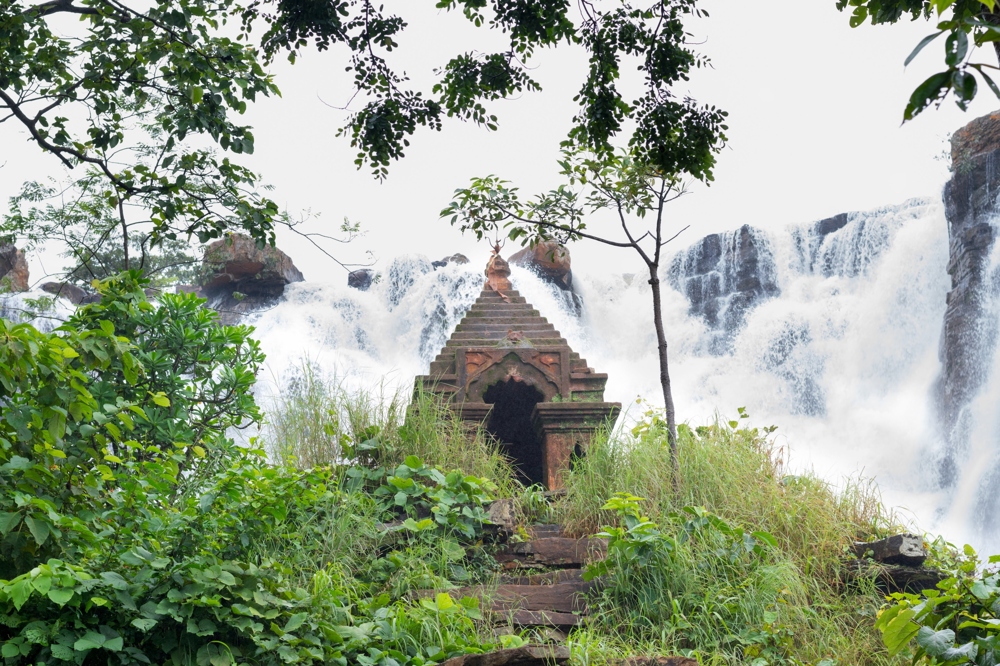
This is the iconic view from the main rim. You can watch the Mungabahar River suddenly drop over a massive cliff, splitting into white, frothy channels against the dark black rocks.
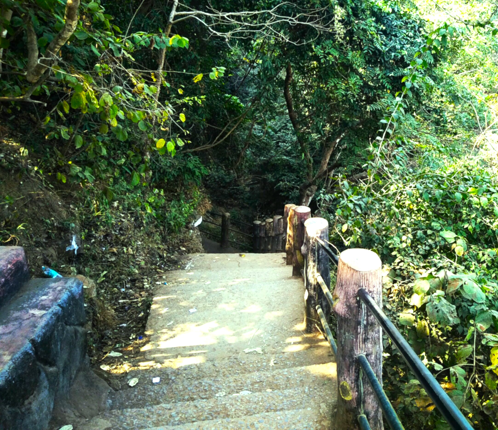
Carefully constructed pathways allow physically fit tourists to reach the absolute base for an immersive experience.You can walk down a well-built flight of steps into the gorge.
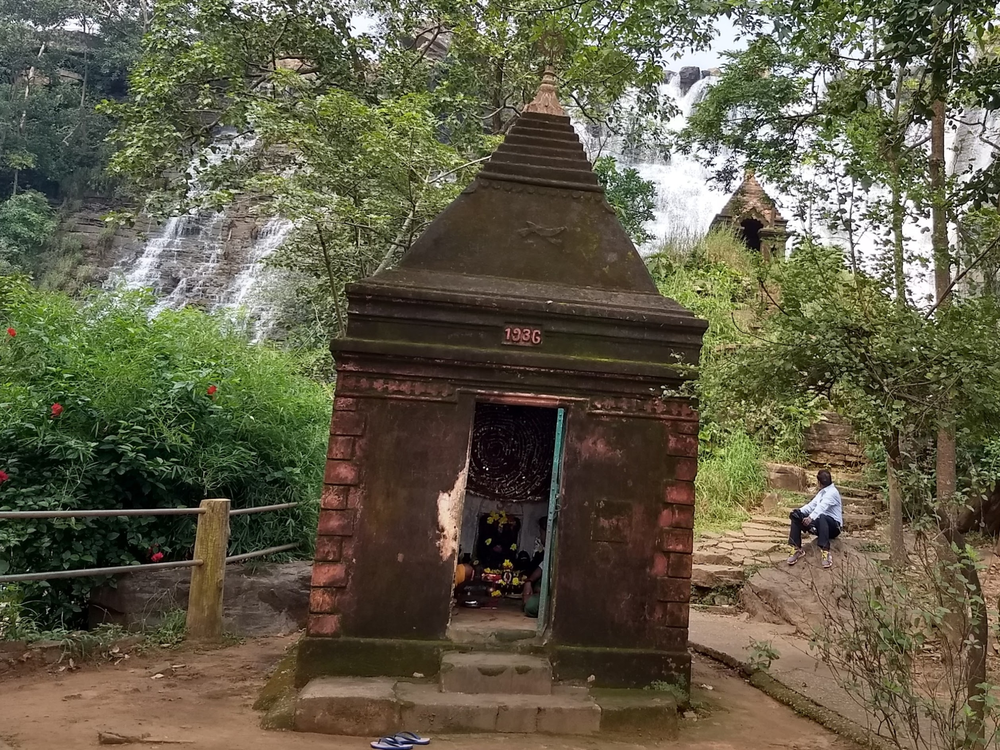
Revered Shiva temples with ancient Nandi idols positioned on the flanks, highly active during Mahashivratri. A small, historic Hindu temple built directly on top of a massive boulder right in front of the middle tier of the waterfall.
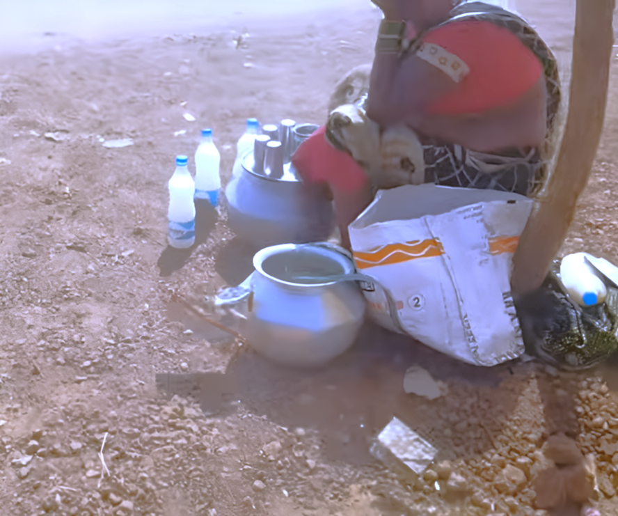
Right near the upper viewing area and parking lot, you can taste authentic local Bastar tribal snacks. Local vendors sell fresh, hot Chila, Fara, and wild forest fruits, giving you a literal taste of the local culture.
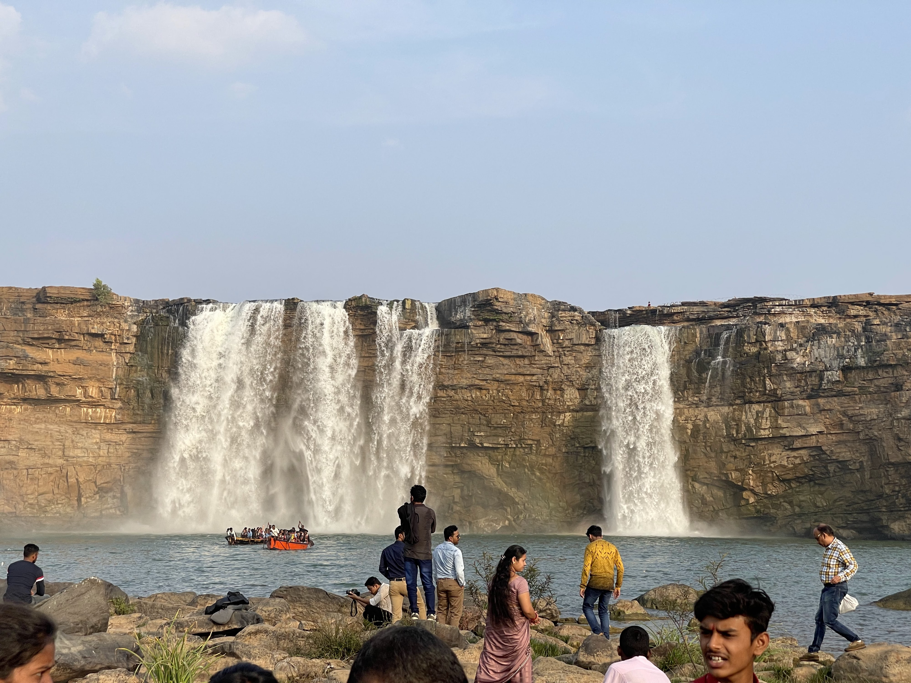
At the very base of the steps, you reach the lowest tier. Here, the water pools together before continuing into the jungle, creating a misty area perfect for photography.
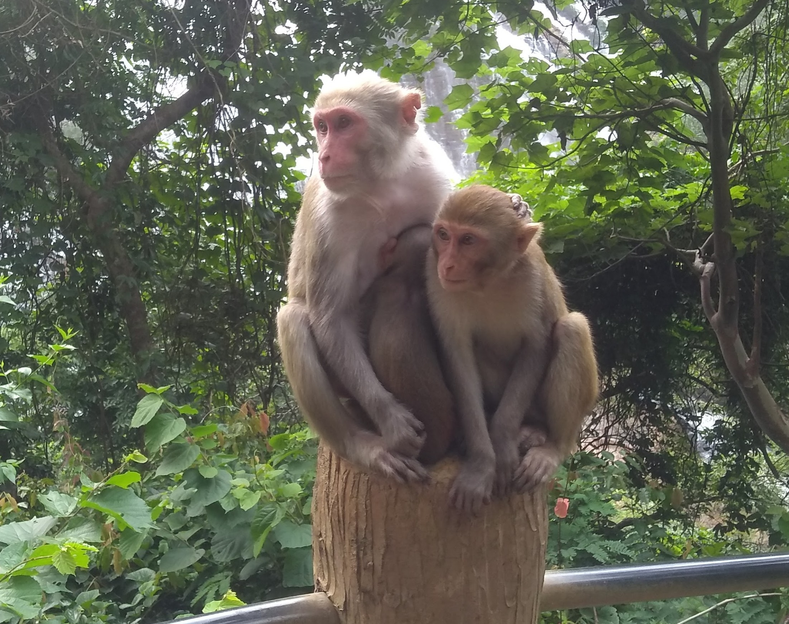
The tall trees surrounding the waterfall steps are filled with local wildlife. You can easily spot langurs and colourful forest birds resting near the canopy.
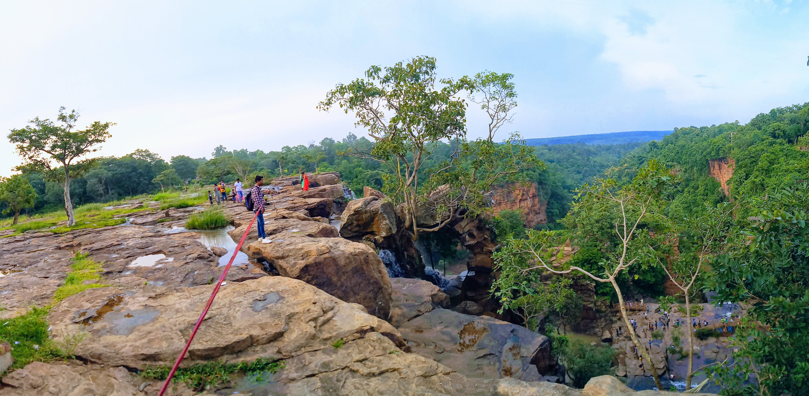
Before walking down the steps, stand at the fenced upper edge. It offers a sweeping, panoramic view of the deep green forest valley cutting through the hills.
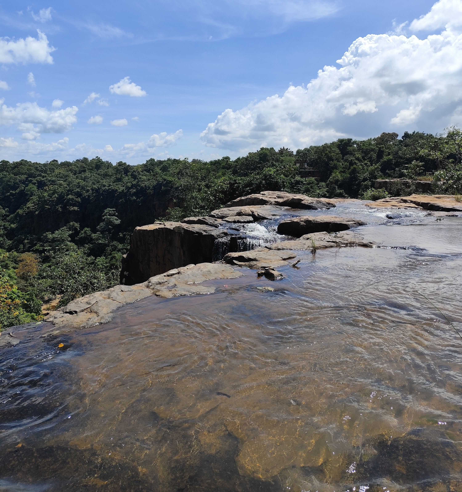
Before the water plunges over the cliff, you can see the wide, flat rocky bed of the Mungabahar River from the safety of the upper viewing barriers.
Standard Hours
08:00 AM - 04:00 PM (Universally open). Peripheral access up to 05:00 PM based on gates.
Best Time to Visit
October to February. Mild weather, safe access to pools, and pure white cascade.
Monsoon Caution
July to September poses safety hazards. Base access and nearby caves are often strictly closed due to flash flood risks.
Nighttime
Night visits are strictly prohibited for security.
Photography Surcharges
Available Facilities
"The multi-tier cascade flowing down wide rock formations creates a stunning white-curtain effect that feels almost magical."
- nani narendra
"No wait to enter on a weekday! Highly recommend visiting between November and January for the best experience!"
- Apurba
"If you love mini-trekking adventure then this is for you. Get down couple hundred feet to enjoy water at the flat surface."
- Sougata Pal
"Amazing place, truly unique water fall... Overall this can be developed into a much better place in the liked of Niagara."
- Debadutta Mishra
Most convenient. Approx 35-40 km from Jagdalpur city. Follow NH 30 (Jagdalpur-Sukma road) to Darbha, then take the turn-off onto Tirathgarh Road. Drive takes ~1 hour through scenic forests.
No direct bus. Take a bus to Jagdalpur, then local bus/shared jeep to Darbha junction. Finally, hire a private jeep/auto-rickshaw into the Kanger Valley National Park.
Nearest railhead: Jagdalpur Railway Station (JDB), ~35 km away. Connected to Raipur, Visakhapatnam, Bhubaneswar. Taxis/autos available at station.
Nearest airport: Maa Danteshwari Airport in Jagdalpur, approx 36 km away.
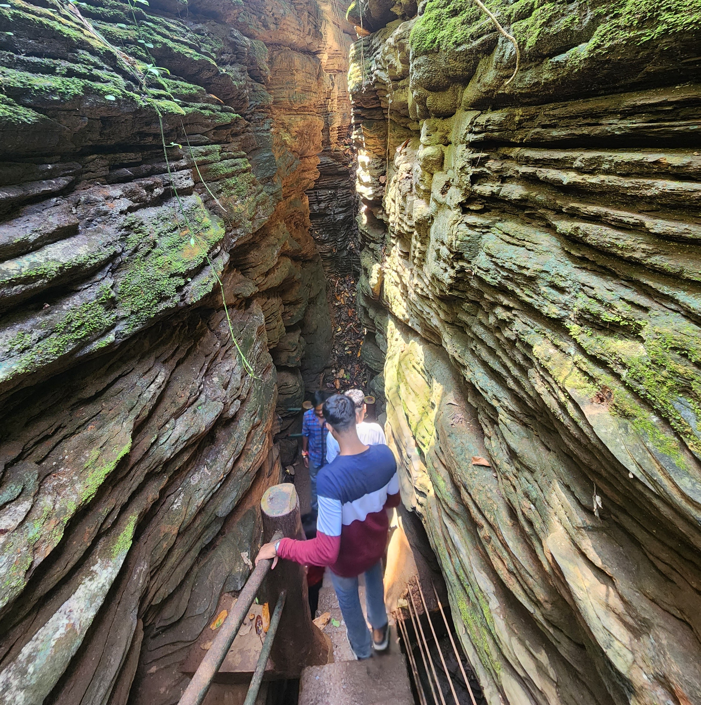
~5 kilometres away
A stunning, multi-chambered underground limestone cave featuring massive natural pillars of stalactites and stalagmites. It is completely pitch-black inside.
View or Visit Place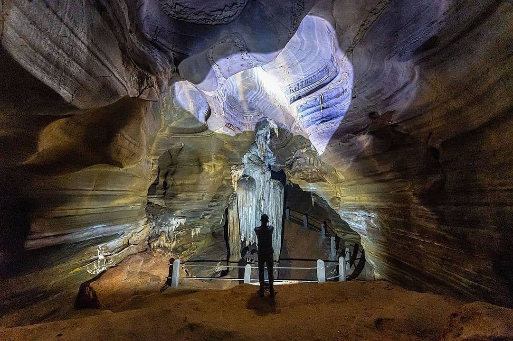
~9 kilometres away
Discovered deep inside the national park, this massive cave system consists of two colossal chambers. Reaching it involves a scenic, short forest trek from the main road.
View or Visit Place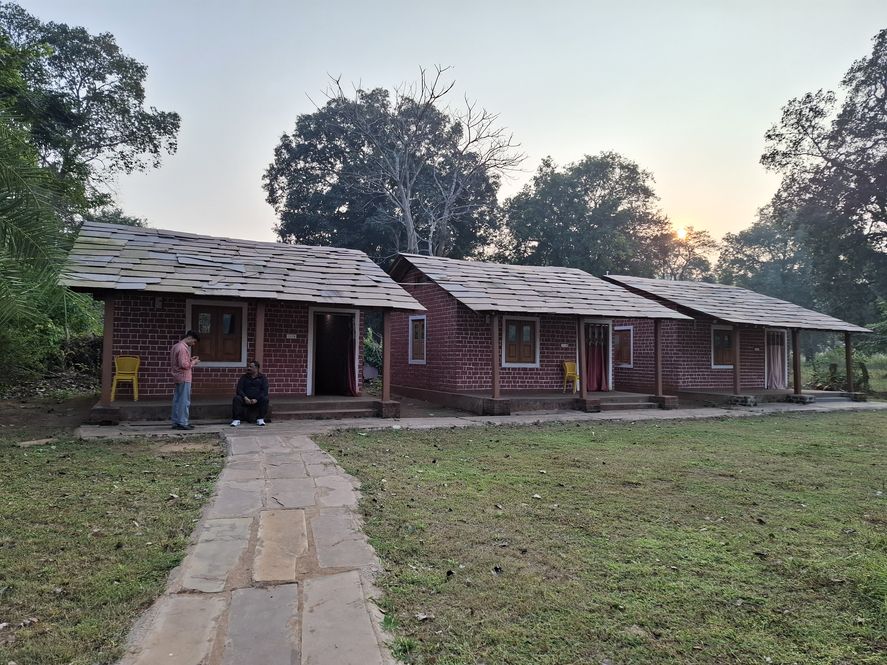
~11 kilometres away
Awarded as one of the best tourism villages, it sits right along the Kanger River. The go-to spot for bamboo rafting, kayaking, and seeing local tribal lifestyles.
View or Visit Place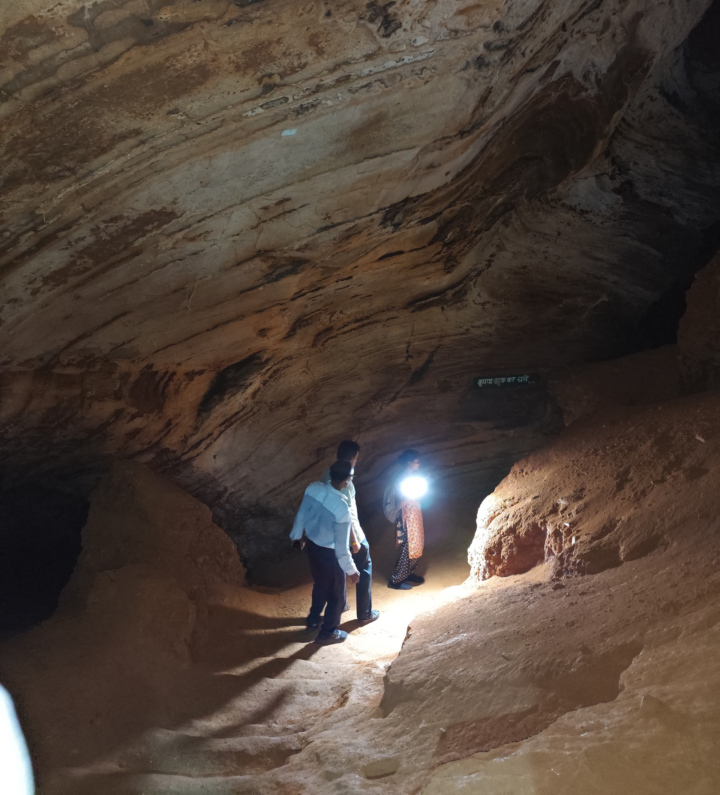
~16 kilometres away
An ancient cave perched on a small hillock. Famous for a unique stalagmite structure that perfectly resembles a Shivalinga and incredible sound echoes inside.
View or Visit Place